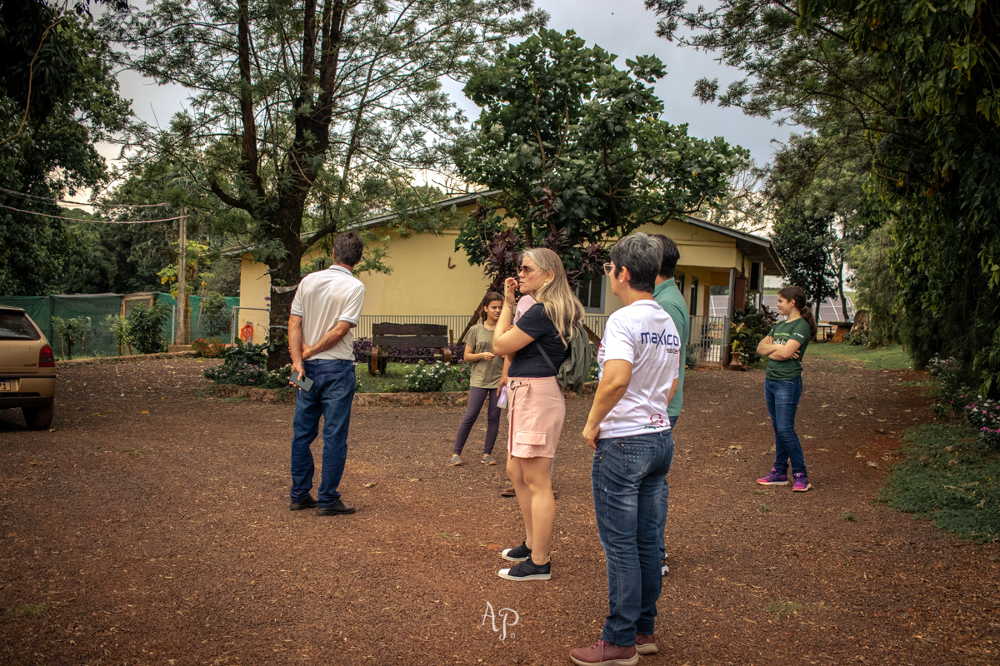

Eventos e
Agendamentos
Bem-vindo aos Eventos da Queijaria Atani!
Em meio aos verdes campos e paisagens serenas, a Queijaria Atani convida você a vivenciar momentos únicos e inesquecíveis. Nossos eventos são celebrações da arte de produzir queijos finos, onde cada queijo conta uma história de dedicação e tradição.
Dos workshops interativos às degustações guiadas, cada encontro é uma jornada sensorial que revela os segredos por trás de nossos queijos premiados. Em um ambiente acolhedor e familiar, compartilhamos não apenas sabores excepcionais, mas também o amor pela qualidade e pela autenticidade.
Seja para um grupo de amigos curiosos ou para amantes da gastronomia, nossos eventos são pensados para enriquecer o conhecimento e apreciação pelo queijo artesanal. Junte-se a nós e descubra por que a Queijaria Atani é muito mais do que um local de produção – é um destino para os apaixonados por bons momentos e bons queijos.
Explore conosco. Celebre conosco. Deixe-se envolver pela magia dos queijos Atani.
- Piquenique
- Ensaio fotográfico com seu fotógrafo
- Excursão
- Refeições com reserva
- Open de queijos
